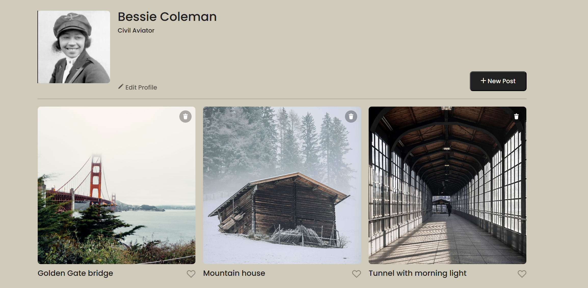
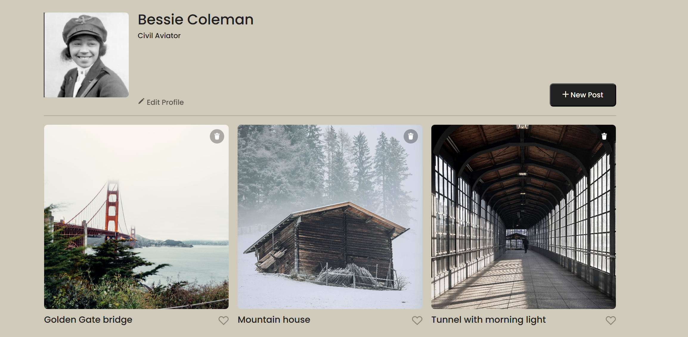
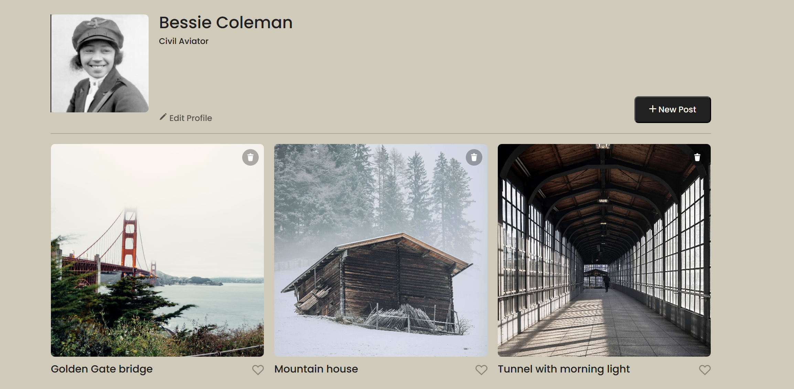
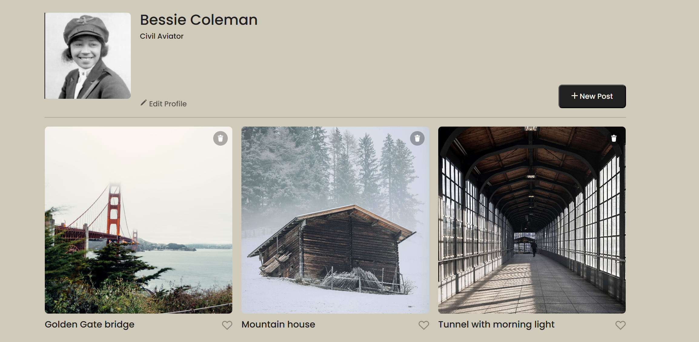
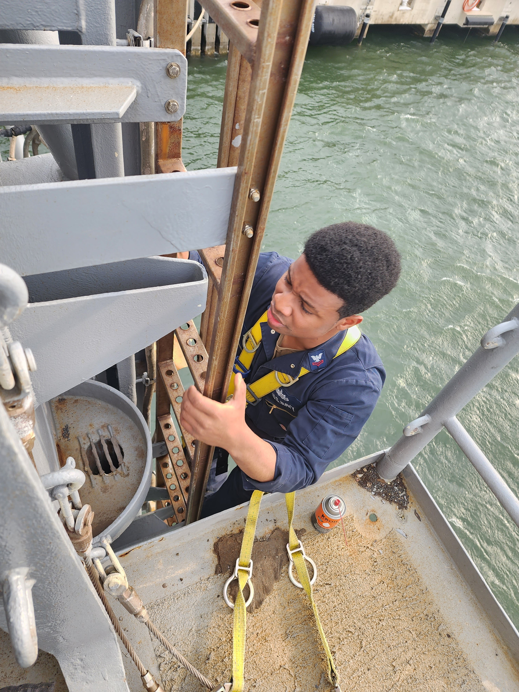

Hello my name is Deondre Butler. I am 25 years old and I am a navy veteran. This is where I started my electrical journey that lasted 7 years. After that i started investing in the tech industry a year ago.
I have been working and learning the tech indusrty for about 1 year now. I curently go to school at triple ten for sofware engineer. Front end development part of the tech industry is the part of tech that intersted me the most. I enjoy turning design ideas into responsive, interactive websites.